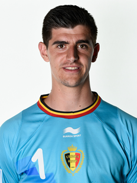
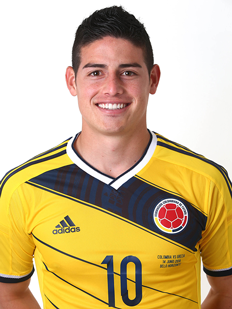
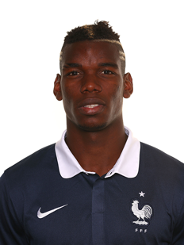
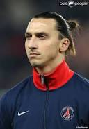

Top 10 World Cup Players (2014)
Thibaut Courtois:
born 11 May 1992) is a Belgian footballer who plays as a goalkeeper for Premier League club Chelsea and the Belgium national football team. Despite his young age, he is widely regarded as one of the best goalkeepers in the world, and he won the 2012–13 and 2013–14 Ricardo Zamora Trophies while on loan at Atlético Madrid. Courtois made his senior international debut in 2011. He has earned over 20 caps and played for Belgium at the 2014 FIFA World Cup.

James Rodriguez
born 12 July 1991), usually known as James Rodríguez or simply James, is a Colombian footballer who plays for Ligue 1 club AS Monaco and the Colombian national team. Played either on the wing or in an attacking midfield role, Rodríguez is commonly ranked as one of the best young players in the world. He has received praise for his technique, vision and playmaking skills, and has been referred to as the successor to his compatriot Carlos Valderrama. His emergence in the Colombia national football team started with the U-20 national team, where he was captain of the 2011 Toulon Tournament-winning side. He eventually captained the U-20 team during the 2011 FIFA U-20 World Cup, which eventually led him to become a regular on the senior squad by age 20. He was selected to play in the 2014 FIFA World Cup, where he won the Golden Shoe as top goalscorer. At club level, Rodríguez starred for Porto in 2012 and was named the best player in the Portuguese Primeira Liga, receiving the Portuguese Golden Ball, and becoming the youngest player to receive the award. In 2013, Rodríguez moved from Porto to Monaco for a transfer fee of €45 million, making him the second most expensive Colombian in history after Radamel Falcao, and one of the most expensive players in world football history.

Philipp Lahm:
born 11 November 1983) is a German footballer who plays as a full back or defensive midfielder for Bayern Munich and the German national team, both of which he captains. Lahm is considered one of the best full backs of his generation, and was included in the World Cup team of the tournament in 2006 and 2010, the UEFA Team of the Tournament in 2008 and 2012 and in the UEFA Team of the Year 2006, 2008, 2012 and 2013. Although Lahm is right-footed, he is able to play on both sides of the pitch. He often cuts from the flank to the inside of the pitch to either shoot or pass. He is renowned for his pace, dribbling and precise tackling abilities as well as his small stature, giving him the nickname the "Magic Dwarf".

Paul Pogba:
(born 15 March 1993) is a French professional footballer who plays for Italian club Juventus in Serie A. He operates primarily as a midfielder and is comfortable at playing both in attack and defence. Pogba was described by his former club Manchester United as a "powerful, skilful, and creative" player who has "an eye for goal and a penchant for the spectacular". After his transfer to Juventus, he gained the nickname Il Polpo Paul ("Paul the Octopus") for his long legs that look like tentacles during tackling or running. He received the Golden Boy award for 2013, given to the best under-21 player in Europe.

Neymar da Silva Santos Júnior:
born 5 February 1992), commonly known as Neymar or Neymar Jr., is a Brazilian footballer who plays for Spanish club FC Barcelona in La Liga and the Brazilian national team as a forward. At the age of 19, Neymar won the 2011 South American Footballer of the Year award, after coming third in 2010. He followed this up by winning it again in 2012. In 2011 Neymar received nominations for the FIFA Ballon d'Or, where he came 10th, and the FIFA Puskás Award for Goal of the Year, which he won. He is known for his acceleration, speed, dribbling, finishing and ability with both feet. His playing style has earned him critical acclaim, with fans, media and former players drawing comparison to former Brazil forward Pelé, who has called Neymar "an excellent player", while Ronaldinho has stated "he will be the best in the world".

Zlatan Ibrahimovic:born 3 October 1981) is a Swedish professional footballer who plays as a striker for French club Paris Saint-Germain and the Swedish national team for which he is captain.
